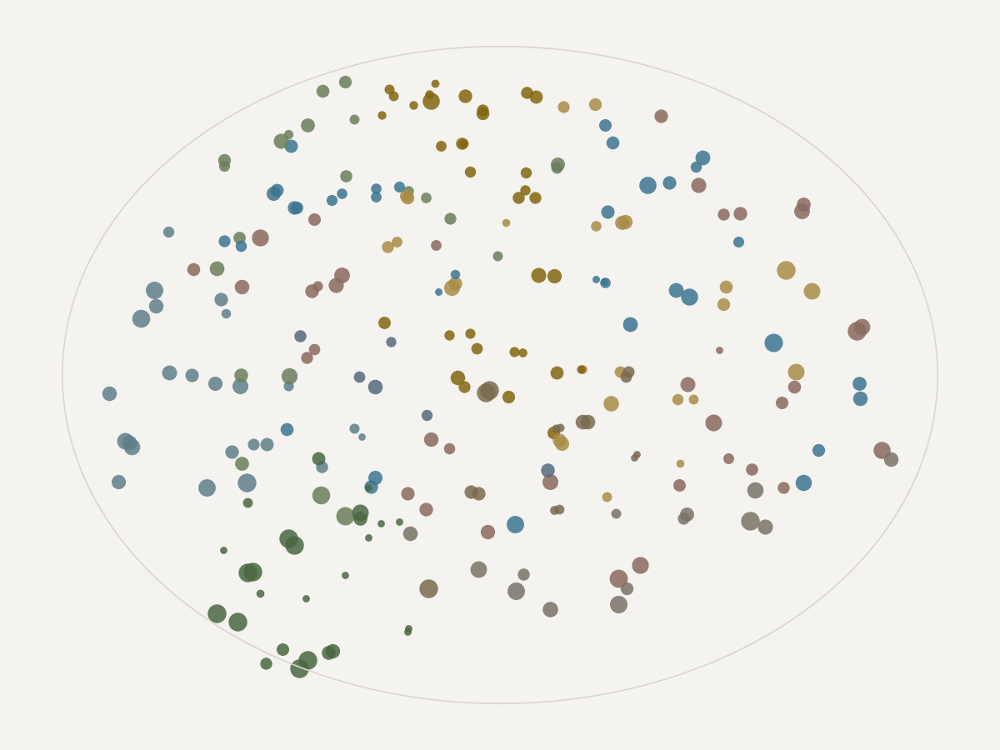
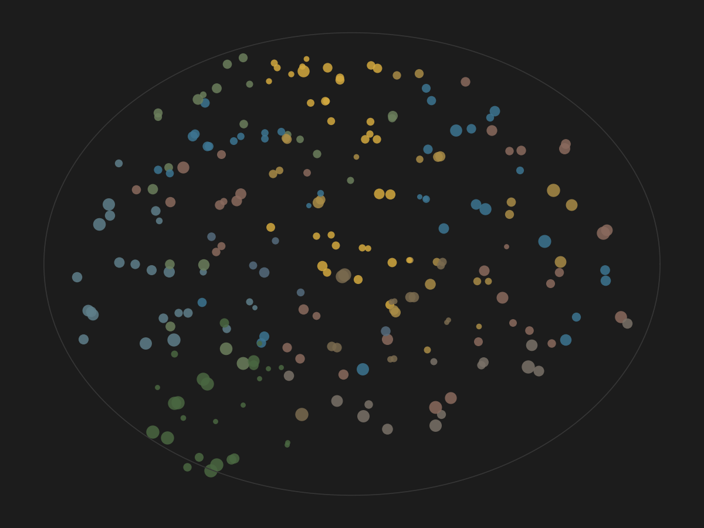

Try ityourself
Three tools. The first is about brain imaging in general and is probably the most useful thing on this site. The second lets you walk every analysis choice this project made. The third is the brain itself.
Three tools
Three tools. The first is about brain imaging in general and is probably the most useful thing on this site. The second lets you walk every analysis choice this project made. The third is the brain itself.
Try 0.15, which is a realistic effect for brain measures against behaviour, at 66 people, which is this project. Then drag the sample size up and watch what changes. That is the honest context for everything on the study page.
This one is not about my data. It is about every brain imaging headline you have ever read.
Set a true effect and a sample size. The tool simulates four thousand studies of that size, counts how many would reach the usual significance threshold, and shows what those studies would report. The gap between the truth and what gets published is the point.
The reason it matters: a study only gets written up when it finds something. If the sample is small, the only way to reach significance is to draw an unusually large effect by luck. So the published number is systematically too big, and the smaller the study, the worse it gets. That is why Marek and others, 2022 argues brain imaging needs thousands of people rather than dozens.
If a set of choices you would consider reasonable gives a very different answer from another set you would also consider reasonable, then no single number from this dataset should be trusted on its own. That is the finding, not a caveat about it.
Every pipeline has forks in it, and most of them are defensible. Which confounds to remove. Which frequency band to keep. How to measure the links between regions. Which model. Which hand.
Rather than pick one combination and report it, this project runs the whole grid. Choose any combination below and see where it lands among all the others.
The pipeline grid runs after the main analysis finishes. It will appear here.


241 regions: 200 in the cortex, 15 deeper in the brain, 26 in the cerebellum. Filter by network, or click any region to see where it sits and how much the model leaned on it.
Region importance appears once the models have been fitted. For now the map shows the regions themselves.
Loading the map.